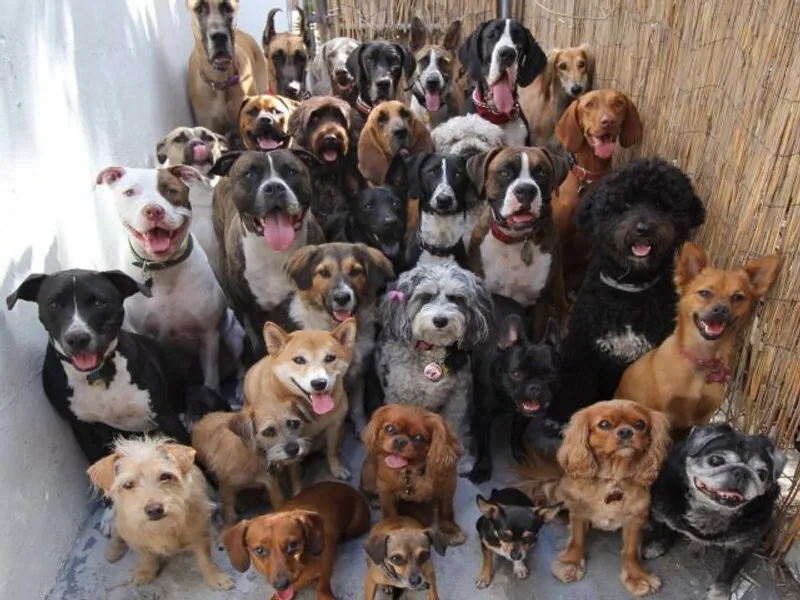

Sobre a Adoção
Adotar um animal é um ato de amor. Muitos cães e gatos aguardam uma família que possa oferecer carinho, proteção e um lar seguro.
Benefícios para Adoção
- Salvar a vida de um animal
- Ganhar um companheiro fiel
- Combater o abandono de animais
- Levar mais alegria para sua casa
Cuidados
Antes de adotar um animal, é importante lembrar que ele precisará de amor, atenção, alimentação adequada, acompanhamento veterinário e um ambiente seguro. Os animais fazem parte da família e merecem respeito, carinho e proteção durante toda a vida.
Importância
A adoção responsável ajuda a reduzir o número de animais abandonados nas ruas e contribui para uma sociedade mais consciente e solidária. Ao adotar, você oferece uma nova oportunidade para um bichinho viver feliz e cercado de amor.
Curiosidades
- Os cães conseguem reconhecer emoções humanas.
- Os gatos podem dormir até 16 horas por dia.
- O olfato dos cães é muito mais desenvolvido que o dos humanos.
- Os gatos utilizam os bigodes para se orientar nos espaços.
Depoimentos
Adotei a Pretinha na feira de doação no Centro da minha cidade e está sendo muito especial para mim e para minha família.
- Eloisa Negri de SouzaHistória da ONG
Nossa ONG foi criada com o objetivo de resgatar animais abandonados e ajudá-los a encontrar um lar cheio de amor. Desde a fundação, centenas de cães e gatos já foram adotados.
Missão e Valores
Missão: Promover a adoção responsável e o bem-estar animal.
Valores:
- Respeito aos animais.
- Amor e cuidado.
- Responsabilidade.
- Compromisso com a adoção consciente.
Galeria de Fotos
Aqui você pode ver mais fotos dos nossos animais.


Requisitos para Adotar
- Ser maior de 18 anos.
- Apresentar documento com foto.
- Comprovar residência.
- Comprometer-se com os cuidados do animal.
OBRIGADA POR VISITAR MEU SITE 🐾